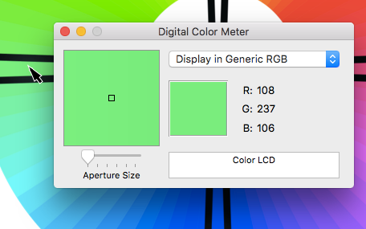
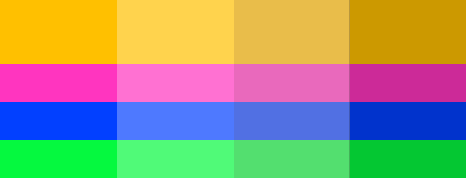
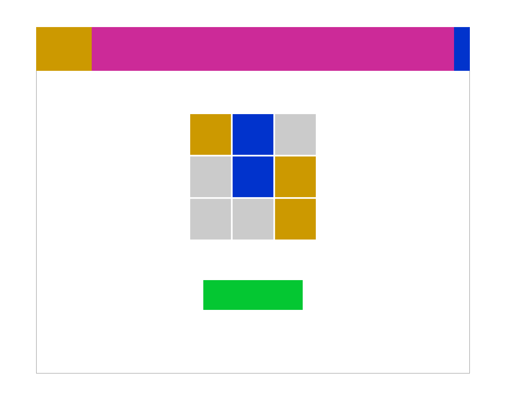

Do these colors 'go'? For your webpage, logo or bedroom, you might be scared your color choices don't pass graphics muster. I say if it feels good do it, but for you perfectionists here are the steps towards a fail-proof color palette. We'll start big: with a 4-color scheme.
First, find a colorwheel like the one below. The more hues the better. Then pick a color you like.
You're almost done! To get the 3 remaining colors, decide on one of 2 color schemes: tetradic (vibrant, contrasting) or analogous (similar, coherent).
Tetradic
Click to rotate

For a tetradic scheme, use colors at 90, 180, and 270 degrees from the starting color.
Analogous
Click to rotate
For an analogous scheme, use colors at 30, 60 and 90 degrees from the starting color.
Save your colors
Using a color picker like ColorZilla or the Digital Color Meter on Macs (in Applications/Utilities) to save the RGB values.
With the Digital Color Meter, hover over a color to see it's RGB value.
Create a mood
Finally, personalize the color palette by playing with tints (white transparencies), tones (gray transparencies) and shades (black transparencies).
This tetradic color scheme shown plain, covered in white at 30% opacity, covered in gray at 40% opacity, and covered in black at 20% opacity.
Use your colors!
Now make something! I like the richness of the dark shade so I'll use them in an online tic-tac-toe game. What will you make?
Tetradic color scheme based on the fourth color on the wheel (moving clockwise) applied with a 20% black shade.